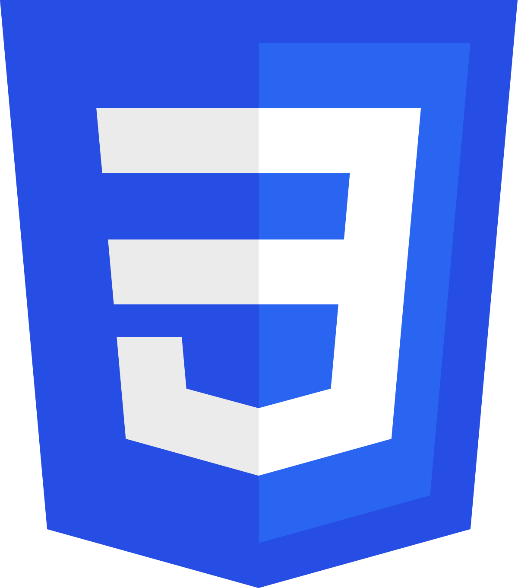
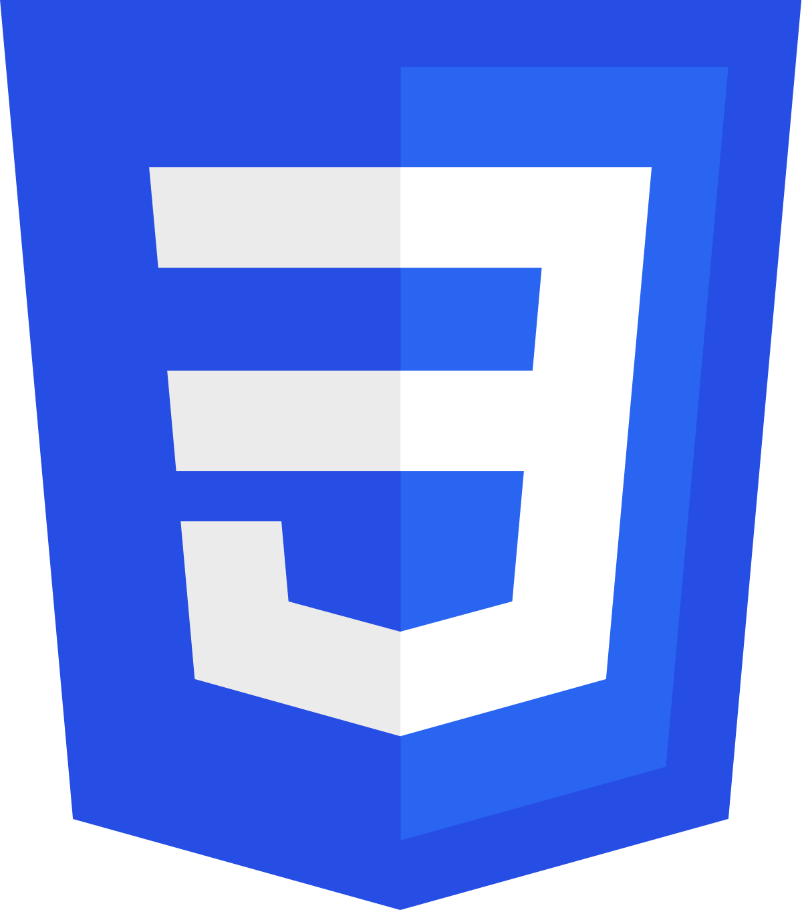
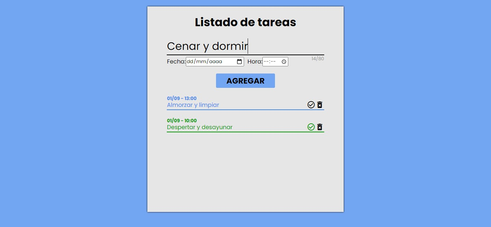
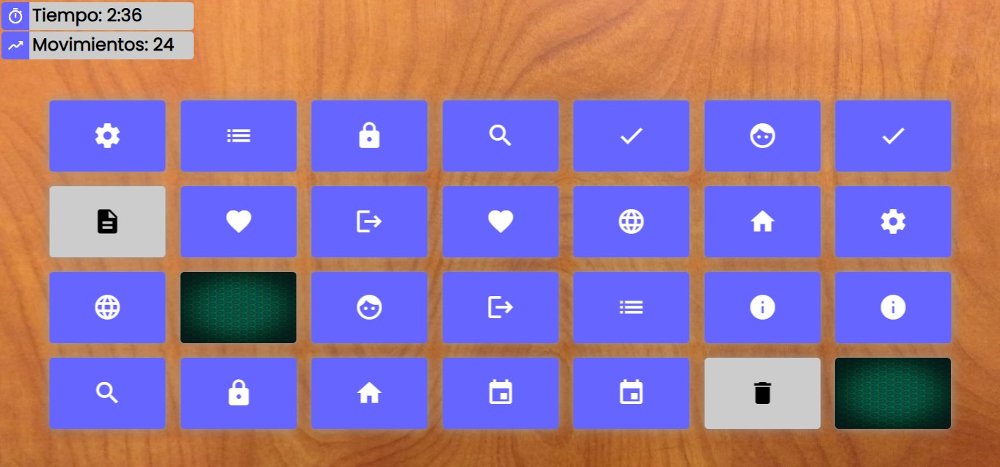

Desarrollador Web Front-end Junior
Deseo de progresar profesionalmente en desarrollo web, dispuesto a aprender más tecnologias, y con alto nivel de adaptabilidad a entornos laborales y sociales


Deseo de progresar profesionalmente en desarrollo web, dispuesto a aprender más tecnologias, y con alto nivel de adaptabilidad a entornos laborales y sociales

Nivel Intermedio: Conocientos sobre las etiquetas más utilizadas, estructuras organizadas y un trabajo límpio y legible.
Nivel Intermedio: Buen uso de Grid y maquetaciones; breves conocimientos en responsive, animaciones, Flexbox, SASS, Bootstrap y diseño web.
Nivel Medio-bajo: Buenos conocimientos sobre el DOM, funciones, bucles, Event Listeners, timers, tipos de datos y sus metodos; breves conocimientos en POO y consola.
Este proyecto fue realizado con HTML5, CSS3 y JavaScript, usando como base de datos, el localStorage del navegador. La función de este proyecto es el de almacenar tareas a realizar y mostrarlas según el orden de registro.
Ir al proyecto Este proyecto fue realizado con HTML5, CSS3 y JavaScript. Un sencillo juego de memoria, en el que tienes que encontrar todas las cartas iguales para terminar el juego; realizado como un proyecto personal, a modo de estudio y practica en logica de programacion.
Ir al proyecto © Daniel Argüelles - Desarrollador web front-end